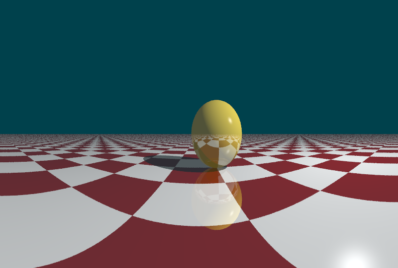
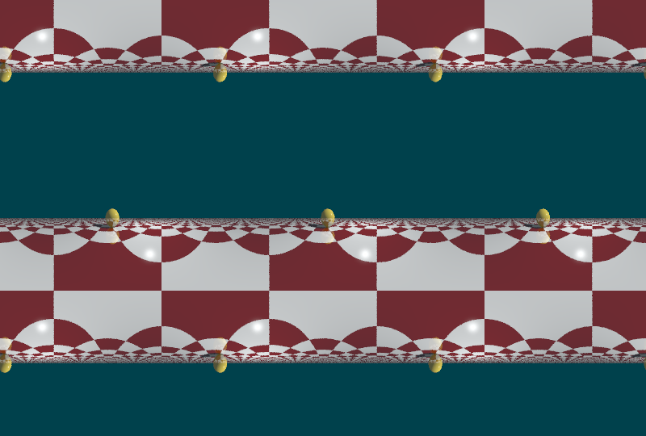
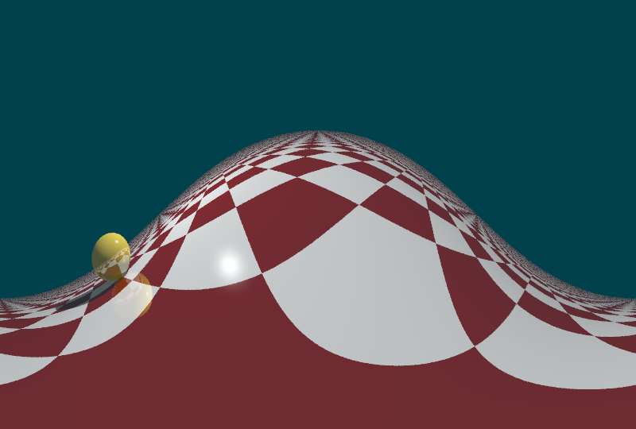
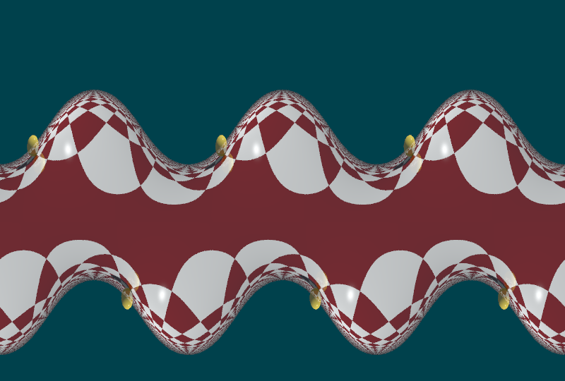
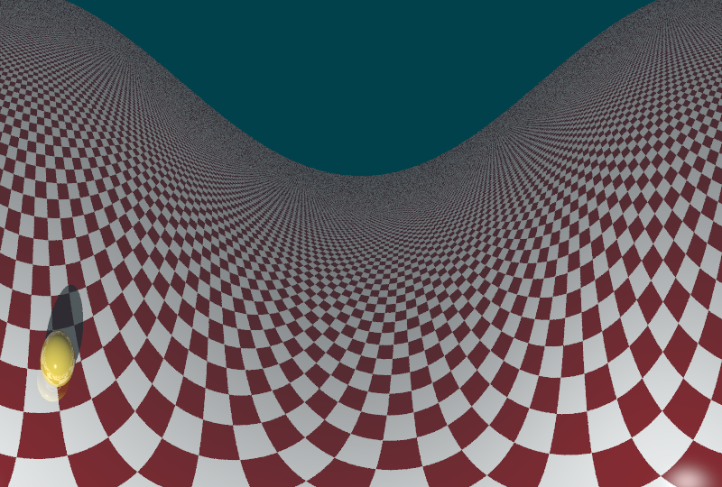

Alternatívna kamera
Domáca úloha NPGR004 : Róbert Eckhaus
Inšpirácia (fisheye effect)
Parametre kamery
- center = pozícia kamery
- pitch = rotácia okolo osi x (v radiánoch)
- yaw = rotácia okolo osi y (v radiánoch)
- $FOV_{\phi}$ = horizontálny zorný uhol (v rad)
- $FOV_{\psi}$ = vertikálny zorný uhol (v rad)
- distortion$_{X,Y}$ = zakrivenie
Vyrenderované obrázky
Pri nastavení distortion na 0 sa vytvára válcová perspektíva s rozsahom daným $FOV_{\phi}$. Rotáciu v horizontálmon smere určuje yaw, vo vertikálnom pitch .
Center: $(0.7, 0.0, -5.0)$
Yaw: $0$, Pitch: $0$
FOV: $(\pi, \pi/2)$
Distortion: $(0,0)$ 
Ak $FOV_{\phi}$ (horizontálne) prekročí $360^\circ$, scéna sa opakuje. To isté platí pre vertikálny smer, horiznont sa "zroluje" a preklopí.
Center: $(0.7, 0.0, -5.0)$
Yaw: $0$, Pitch: $0$
FOV: $(6\pi, 3\pi)$
Distortion: $(0,0)$ 
Parametre distortion určujú zakrivenie projekčnej plochy.
Center: $(0.7, 0.0, -5.0)$
Yaw: $\pi$, Pitch: $0$
FOV: $(2\pi, \pi/2)$
Distortion: $(1,1)$ 
Center: $(0.7, 0.0, -5.0)$
Yaw: $\pi$, Pitch: $\pi/4$
FOV: $(6\pi, 2\pi)$
Distortion: $(1,1)$ 
new PanoramaticCamera( new Vector3d( -4, 10.0, -2.0 ),Math.PI/6, 0, 2*Math.PI, Math.PI/2,-3.0, 1.0); Center: $(-4, 10.0, -2.0)$
Yaw: $0$, Pitch: $\pi/6$
FOV: $(2\pi, \pi/2)$
Distortion: $(-3,1)$ 